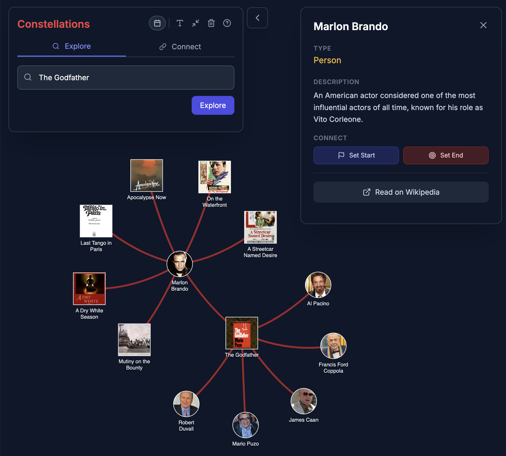
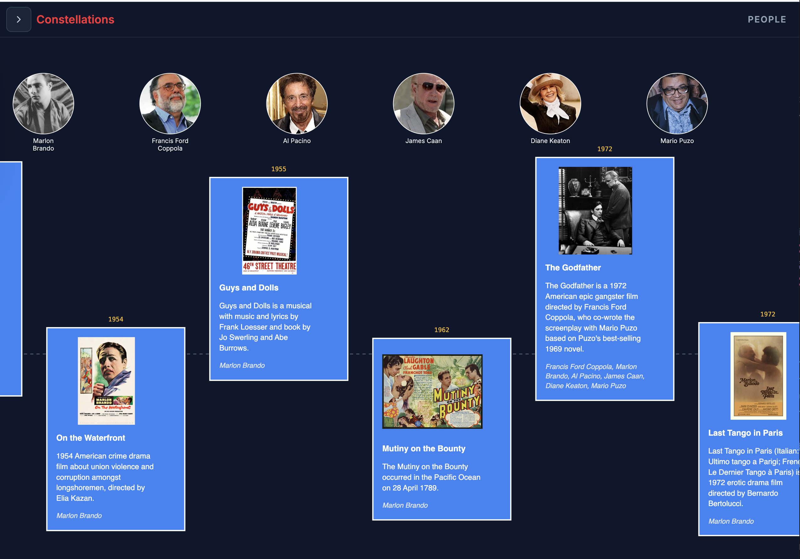
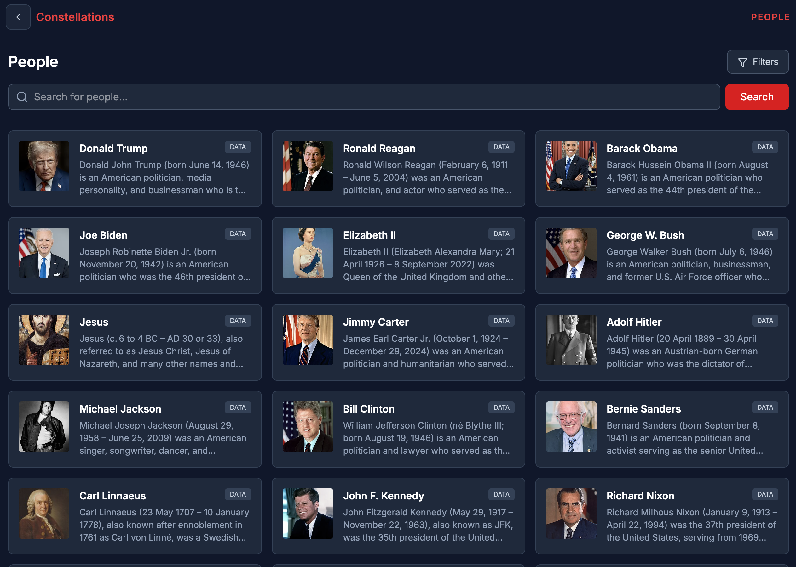
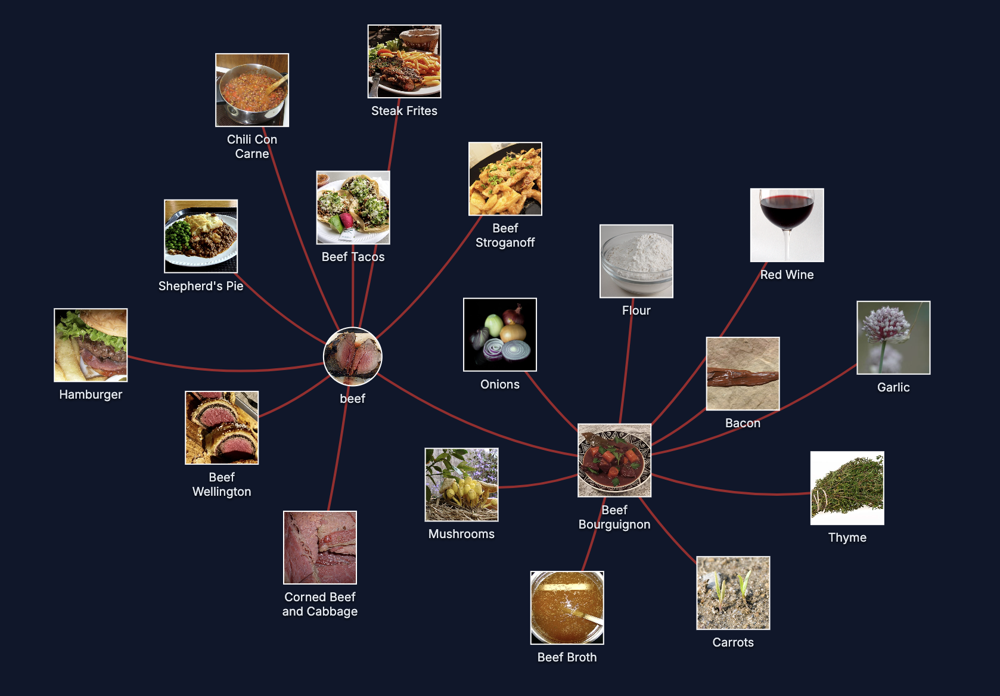
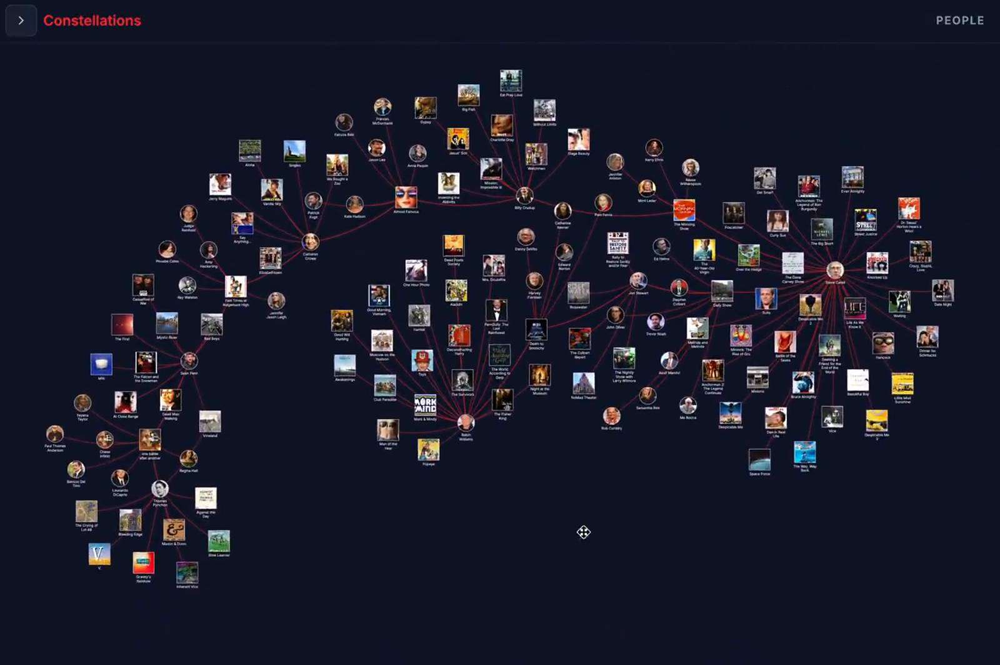

System
Overview
Constellations is an interactive graph explorer that constructs a small, local graph from a user query and supports repeated expansion. The system enforces a bipartite alternation constraint:
- Atomic nodes: individual entities or elementary concepts (e.g., Person, Ingredient, Symptom, Player).
- Composite nodes: aggregations, works, events, groups, conditions, or other “meeting-like” constructs that connect multiple atomics (e.g., Movie, Recipe, Disease, Team, Historical Event/Incident).
The UI encodes this alternation with distinct visual forms (e.g., circles vs cards) while keeping interactions consistent across domains.
Data flow (high level)
1. User query: the user can start from a curated domain seed or type an arbitrary query.
2. Context retrieval: fetch lightweight context (e.g., Wikipedia summary) to help disambiguation and mitigate model knowledge gaps.
3. Start-pair classification (locked): choose a bipartite pair from the first input (currently one of Person↔Event, Ingredient↔Recipe, Symptom↔Disease, Author↔Paper), then lock it for the entire graph (no switching).
4. Expansion: call the LLM to propose 8–10 neighbors on the opposite side of the bipartite partition, conditioned on the locked pair.
5. Evidence attachment: each proposed neighbor includes an evidence snippet + page title; selecting an edge reveals the supporting citation.
6. Caching: store nodes and edges (with evidence) in a database to reduce repeated calls and support persistence.
Sources (important): Constellations is intentionally multi-source: it uses Wikipedia/Wikimedia APIs (Wikipedia + Wikidata), academic corpora/metadata APIs (currently OpenAlex, with Crossref/DOI metadata as a fallback), and an LLM. The system does not crawl arbitrary websites or run general internet search for evidence; however, it does use DuckDuckGo image search as a fallback when Wikimedia does not provide a suitable image. Evidence snippets are sourced from Wikipedia page text and/or corpus metadata when available; when the system cannot verify a snippet from available sources, it is shown as missing rather than guessed.
Bipartite constraint and “events as meetings”
The original domain (people↔events) is motivated by an event-centric view: an event is any construct that brings multiple people into relation. This framing generalizes naturally to other domains by choosing a Composite that aggregates multiple Atomics and for which the inverse membership relation is meaningful (e.g., actors in films; ingredients in recipes).
Evidence-backed edges
Each edge carries structured evidence:
- kind: currently “wikipedia” (verbatim sentence from a Wikipedia page), “openalex” / “crossref” (corpus metadata), “ai” (model-provided when not verifiable), or “none”
- snippet: one sentence
- pageTitle + url: where the snippet is claimed to come from (typically a Wikipedia page)
Selecting an edge displays this evidence in the sidebar. The goal is not to “prove” an edge, but to support interpretability and user judgment during exploration.
Figures (screenshots)
The experience is dynamic (the graph reconfigures as nodes are added; users can drag nodes to reshape local structure). A few static screenshots help convey the interaction model:
In Figure 1, expanding a composite (film) reveals connected atomic entities (people) and supporting evidence.

Figure 2 illustrates the timeline view, where temporal metadata provides a second organizing lens alongside the network layout.

Figure 3 shows a path-seeking example: finding a bipartite path between two entities.

Figure 4 shows the people browser used to seed exploration.

Cross-domain examples (Atomic↔Composite generalization)
Figures 5–7 show the same interaction model applied across domains.



For motion, the repo includes a short demo video: /demo.mp4.
Demo video (in-browser)
The embedded video can render as a black frame in some contexts, so we include a representative still frame instead:

Interaction design: low-friction branching
Constellations is optimized for low commitment per step:
- expanding a node is a single click,
- backing up (choosing a different node) is immediate,
- bulk operations allow quick frontier growth (e.g., expand all frontier nodes across the whole graph),
- when a node’s first expansion yields very few neighbors, the UI can automatically request “expand more” once to reduce repeated clicks.
This interaction model encourages “try and see” exploration, where users do not need to decide a path “once and for all.”
Caching and persistence
To keep exploration responsive and reduce repeated API calls, Constellations caches:
- nodes (title, type, summaries, images, and classification metadata), and
- edges (role/label and evidence metadata).
Caching supports repeated browsing, saving/loading graphs, and revisiting a previously explored frontier with evidence intact.
Implementation notes
The system is deployed as two primary interactive experiences:
- Standalone Web Application: A full-canvas exploratory research interface. It supports deep-dive sessions, saved graph management, and a comprehensive "People Browser" for seeding new investigations.
- Chrome Extension (Wikipedia Sidebar): A context-aware implementation that lives alongside a user's active browsing. Specifically, when reading a Wikipedia article, the extension constructs a relational graph of the article's core entities. This provides something like a physical location for the article in information space, allowing the user to see the topological "neighborhood" of the topic they are currently reading.
While the core ideas are model- and stack-agnostic, a few design choices matter for reproducibility and user experience:
- Graph rendering and interaction: a force-directed node-link layout supports direct manipulation (dragging nodes), hover highlighting, and edge selection for evidence inspection. Nodes are visually differentiated by partition (Atomic vs Composite) to reinforce alternation.
- Bounded neighborhood expansion: each expansion requests a small number of neighbors (typically 8–10) to avoid hairball growth and to keep the choice set cognitively manageable.
- LLM output guardrails: expansions are constrained to named entities on the opposite partition and require per-edge evidence fields (a short snippet plus a source page title/URL). This does not guarantee correctness, but it makes edges inspectable.
- Context-first disambiguation: before classification/expansion, the system fetches lightweight context (e.g., a Wikipedia summary) to reduce ambiguity and mitigate model knowledge gaps.
- Session-level pair locking: after the first query, the chosen Atomic↔Composite pair is locked for the remainder of the graph exploration to reduce mid-graph switching and preserve stable semantics for expansion prompts.
- Caching and persistence: nodes and edges (including evidence) are cached to reduce repeated LLM calls and to enable saving/loading graphs with evidence intact.